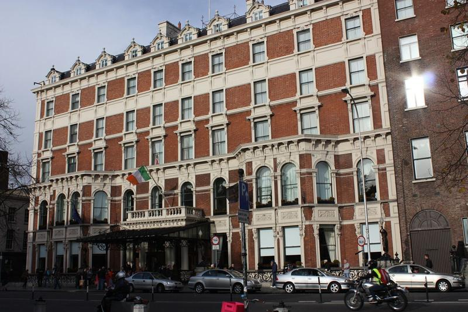

Final plan · June 2 – 16, 2027 · a birthday trip for two
Jennifer's Birthday Trip
Dublin · Ashford Castle · London · Champagne · Nice
🎂 Birthday: Monday, June 7, 2027 at Ashford Castle ✓ Booked
Checked Nov 21, 2026 · prices for 2 adults · flights and all hotels booked
13 nightsin Europe · Thu Jun 3 – Wed Jun 16
3 countriesIreland · UK · France
≈ $14,909flights, trains, hotels, bags & car, before food
$20kBenchmark
Final plan · 3-2-3-2-3
Day by day
The transatlantic flights and all five hotels are booked. Knock → Heathrow, the trains and the car are not booked yet; see the booking checklist below.
Wed Jun 2
✓ Booked
Fly SFO → Dublin
United UA 2391 SFO 1:10 pm → Washington Dulles 9:27 pm, then UA 228 at 11:05 pm → Dublin 11:10 am Thursday. Home Wed Jun 16 on SWISS: LX 565 Nice 10:50 am → Zurich 12:05 pm, LX 38 Zurich 1:15 pm → SFO 4:15 pm.Booked with United miles · confirmation PBWTSM · seats not selected yet.
168,000 miles + $234For both of you, both directions, economy, taxes and fees included

Thu Jun 3 – Sun Jun 6
✓ BookedMarriott Bonvoy · Autograph Collection
Dublin · 3 nights
The Shelbourne, Autograph Collection, on St Stephen's Green, a short walk to Grafton Street and Trinity College. Guest room, 1 King. Platinum perks can apply (see below).Booked on Bonvoy points · confirmation 73079619 · free cancellation until 11:59 pm Dublin time, Jun 2, 2027.
Pick up a one-way rental car in Dublin and drive about 3 h to Cong. Check-in is from 3 pm. The car is only for the two transfers: Dublin → Ashford, then Ashford → Knock airport on Jun 8.
≈ $350Estimate: one-way rental with drop fee, plus fuel. Not priced live.
Sun Jun 6 – Tue Jun 8
✓ Booked🎂 Birthday · Mon Jun 7
Ashford Castle · 2 nights · her birthday
Junior Stateroom on the A Taste of Ireland package: a five-course dinner in the George V Dining Room, an Irish dinner in The Dungeon, afternoon tea, and breakfast both mornings. Birthday Mon Jun 7 at the castle. The Spa is open daily 8 am–7 pm (treatments 9:30 am–6 pm).Booked · deposit paid · free cancellation until May 23, 2027.
€7,120 (~$7,825)Total for two nights, taxes included
✓ Hotel bookedTravel not booked yetMarriott Bonvoy · JW Marriott
Knock → London · 3 nights
Drive 50 min to Ireland West Airport Knock and drop the car. Aer Lingus 1:05 pm → Heathrow 2:30 pm. JW Marriott Grosvenor House on Park Lane, facing Hyde Park. The hotel says its Executive Lounge is free for Platinum members.Hotel booked · confirmation 73083147 · free cancellation until 11:59 pm London time, Jun 7, 2027 (£632 fee after).
$172 + £1,919 (~$2,518)Flight $172 for two, not booked yet (Ryanair Knock → Stansted $108) · hotel £1,919.40 for 3 nights, Superior 1 King, Member Flexible rate, may be charged at the hotel · non-Marriott alternate: InterContinental Park Lane (IHG)
✓ Hotel bookedTravel not booked yetMarriott Bonvoy · Autograph Collection
Eurostar → Champagne · 2 nights in Reims
Eurostar 12:31 pm St Pancras → Paris Nord 3:59 pm, then a 5-minute walk to Paris Est and the TGV to Reims (about 45 min). La Caserne Chanzy Hotel & Spa, Autograph Collection, a converted fire station facing the cathedral, with a spa. Sat Jun 12 is for the champagne houses: cellars in Reims, or the train to Épernay (about 25 min) for the Avenue de Champagne.Hotel booked · confirmation 73084366 · free cancellation until 11:59 pm, Jun 10, 2027 (€319.60 fee after).
$273 + ≈$100 + €639 (~$702)Eurostar Plus £208 for two, live on eurostar.com, not booked yet (Standard £156) · Paris → Reims TGV 1st class ≈ $100, estimate · hotel €639.20 for 2 nights, Chanzy Guest Room 1 King, courtyard, Member Flexible rate
✓ Hotel bookedTravel not booked yetMarriott Bonvoy · Le Méridien
TGV → Nice · 3 nights on the Riviera
Train all the way: Reims → Paris Est (45 min), metro to Gare de Lyon, then a direct TGV INOUI to Nice (about 5 h 40 min). Door to door is about 7–8 hours. There is no direct train from Champagne-Ardenne TGV or Marne-la-Vallée to Nice; those routes change once or twice too. First class is recommended for this long leg: it's about $140 more for two (estimate). Le Méridien Nice on the Promenade des Anglais, 15 min from the airport. Monaco is 25 min by local train.Hotel booked · confirmation 73085131 · free cancellation until 11:59 pm, Jun 10, 2027 (€574 fee after).
≈$400 + €1,723 (~$1,892)TGV 1st class for two ≈ $400, estimate (2nd ≈ $260); June 2027 French fares aren't on sale yet · hotel €1,722.88 for 3 nights, Classic 1 King, courtyard, Member Flexible rate
Food: estimate $250–400 a day for two, 11 days ($2,750–4,400). Ashford's package already covers its dinners and breakfasts.
Car: only for Dublin → Ashford → Knock, an estimate.
All in, economy
$17,659–$19,309
flights, trains, hotels, bags, car and food · $700–2,300 under the $20k benchmark in cash, plus 168,000 United miles and 332,000 Bonvoy points
Economy only. Google Flights shows the cheapest fare type and doesn't say whether it's Basic or Standard. Before booking, compare the airline's Standard fare (seat choice, changes, sometimes a bag). If it's only a little more, take it. Trains in first class: Eurostar Plus is £52 more than Standard for two on the 12:31 pm (live), and first class on the 6-hour TGV is about $140 more than second (estimate). Both gaps are small, so the plan uses first.
Ways to trim: The College Green Hotel or the InterContinental in Dublin, St. Pancras in London, AC Hotel Nice, or Standard class on both trains (saves about $210).
Sources: Google Flights and Google Hotels (nightly price with fees, 2 adults), hotels' own rates where shown, checked Nov 21, 2026. Eurostar: eurostar.com, live. SNCF Connect blocked automated checks, and June 2027 French domestic fares aren't on sale yet, so TGV fares are estimates. Ashford: booking confirmation. Food, bags and car are estimates.
Booking checklist
In this order. Booked so far: the transatlantic flights and all five hotels. Still to book: Knock → Heathrow, Eurostar, the TGV legs and the car.
Transatlantic flights✓ Booked United miles, confirmation PBWTSM: SFO → Dublin Wed Jun 2, Nice → SFO Wed Jun 16. Seats picked.
Knock → Heathrow, Tue Jun 8, Aer Lingus 1:05 pm, $172. Google Flights
Hotels✓ All bookedAll four are Marriott Bonvoy. Book direct on marriott.com, signed in, so the stay earns points and Platinum Elite perks (third-party sites usually don't). Pick the free-cancellation rate:
The Shelbourne, Autograph Collection, Jun 3–6✓ Booked on points, confirmation 73079619.
JW Marriott Grosvenor House, Jun 8–11✓ Booked 73083147, £1,919.40, free cancellation until 11:59 pm London time Jun 7 (£632 fee after).
La Caserne Chanzy, Autograph Collection, Jun 11–13✓ Booked 73084366, €639.20, free cancellation until 11:59 pm Jun 10 (€319.60 fee after).
Le Méridien Nice, Jun 13–16✓ Booked 73085131, €1,722.88, free cancellation until 11:59 pm Jun 10 (€574 fee after).
Terms are from Google Hotels listings. Confirm them on the rate you book.
Eurostar, Fri Jun 11, 12:31 pm St Pancras → Paris Nord, Eurostar Plus £208 for two. On sale now. eurostar.com
TGV Paris Est → Reims (Jun 11) and Reims → Paris → Nice (Sun Jun 13), first class, when sales open. French trains usually open a few months ahead. SNCF Connect
One-way car, Dublin Jun 6 → Knock airport Jun 8, estimated at about $350.
Ashford Castle: booked, deposit paid, free cancellation until May 23, 2027.
Compare: the final plan, 2/2/2 and the previous plan
Same Ashford booking (Jun 6–8) in every version. Economy, 2 adults, Marriott picks, trains in first class.
$529: United miles booking $234 + seats $123 (booked) + Knock–Heathrow $172
$1,974: Porter via Toronto $1,802 + Knock–Heathrow $172
$2,458: Aer Lingus nonstop $2,037 + two short flights $421
Trains
$773: Eurostar Plus $273 (live) + TGV 1st ≈ $500 (estimate)
$878: Eurostar Plus $378 (live) + TGV 1st ≈ $500 (estimate)
–
Hotels
$12,937 cash + 332,000 Bonvoy points (all booked)
$12,481
$14,570
Bags + car (estimates)
$670
$670
$410 + car (not priced)
Food (estimate)
$2,750–4,400 (11 days)
$2,000–3,200 (8 days)
$3,250–5,200
All in
$17,659–19,309 + 168,000 miles + 332,000 points
$18,003–19,203
$20,688–22,638 + car
vs $20k
Under, by $700–2,300 (cash)
Under, by $800–2,000
Over, plus the car
Why 3-2-3-2-3: no rushed stops, and every move is one simple step (drive, short flight, Eurostar, TGV). With the flights on miles and The Shelbourne on points, the cash total is under the $20k benchmark (the comparison columns are priced in cash).
Champagne options: La Caserne Chanzy, Autograph Collection (Marriott, Reims) $295/night · luxury: Royal Champagne Hotel & Spa $1,242/night · Domaine Les Crayères $1,282/night.
Marriott Platinum Elite
Christoph is Lifetime Platinum Elite. Every hotel except Ashford is Marriott Bonvoy: The Shelbourne and La Caserne Chanzy (both Autograph Collection), JW Marriott Grosvenor House, and Le Méridien Nice. Book them on marriott.com. Non-Marriott hotels appear only as alternates. At these hotels, Platinum usually means:
A room upgrade at check-in when one is available, sometimes to a suite.
Executive lounge access where the hotel has one (Grosvenor House says it's free for Platinum), otherwise a welcome gift that is often breakfast, depending on the brand.
4 pm late checkout on request, depending on availability.
None of it is guaranteed. The prices above are public Google Hotels rates; Bonvoy member rates and points prices weren't visible.
Good to know
Why Ashford, not Adare: Adare Manor's main house and spa are closed Apr 30 – Sep 27, 2027 to get ready for the Ryder Cup (notice), so the birthday moved to Ashford, with its spa open.
Irish bank holiday: Mon Jun 7, 2027 is the June bank holiday in Ireland, so Dublin and the west are busier that weekend.
Monaco Grand Prix: Jun 4–6, 2027 (formula1.com). Over before you reach the Riviera.
Trains: Eurostar for June 2027 is already on sale. French TGV tickets usually open a few months ahead, so book the Reims and Nice legs when they appear.
Booked: the transatlantic flights (United miles, PBWTSM), The Shelbourne (Bonvoy points, 73079619), Ashford, Grosvenor House (73083147), La Caserne Chanzy (73084366) and Le Méridien Nice (73085131). Hotel prices in pounds and euros are converted at the Nov 20, 2026 rates (£1 = $1.31, €1 = $1.10). Every other price was checked live on Nov 21, 2026 and will move.